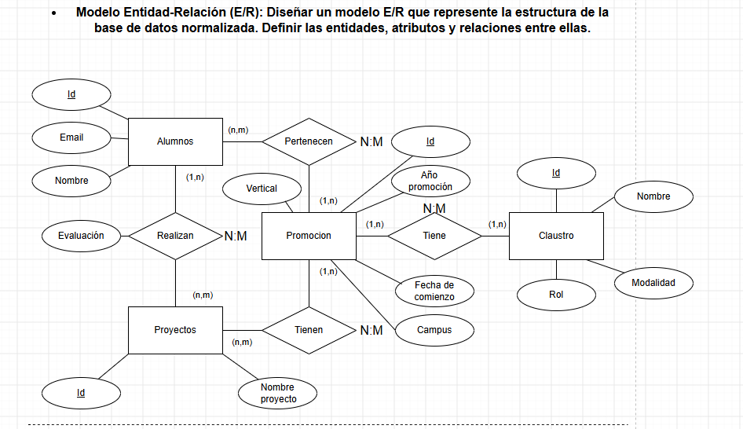
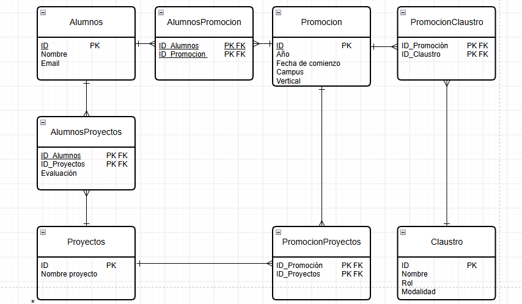
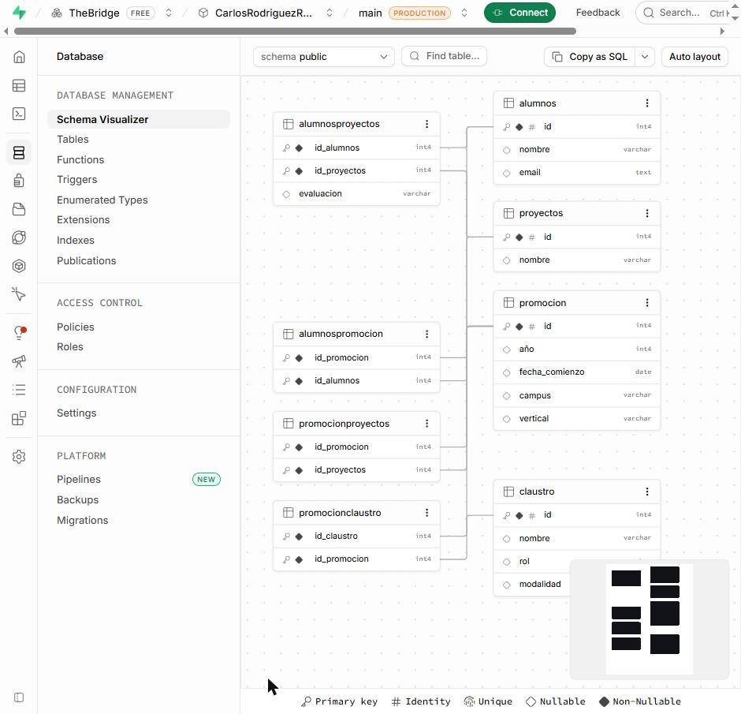
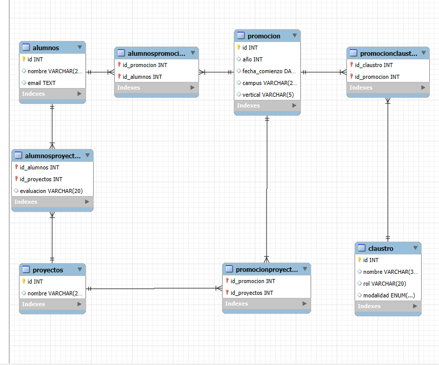
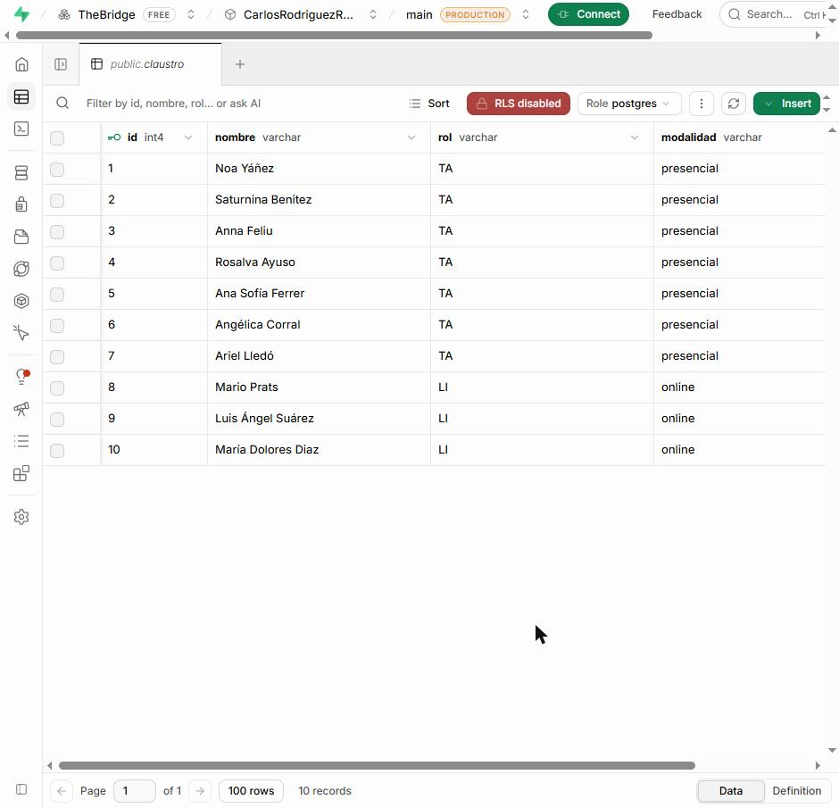
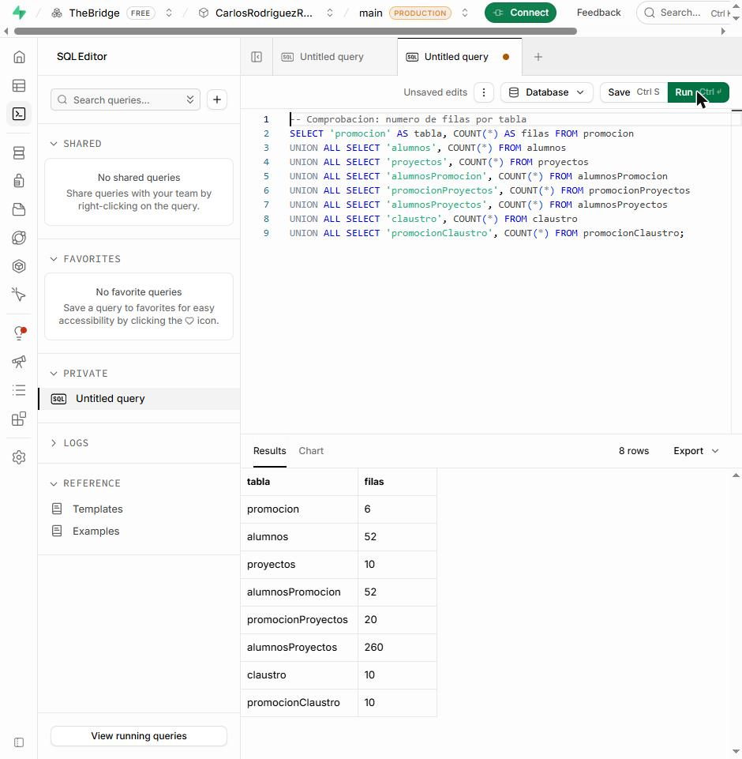
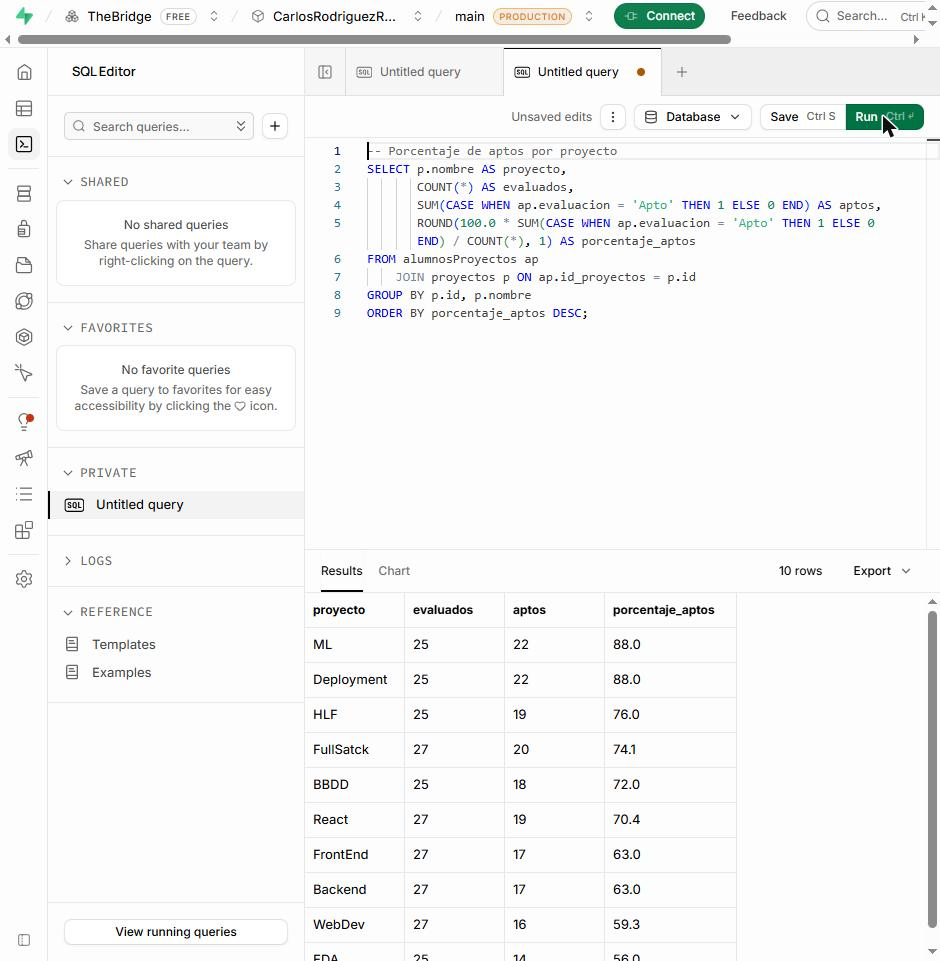
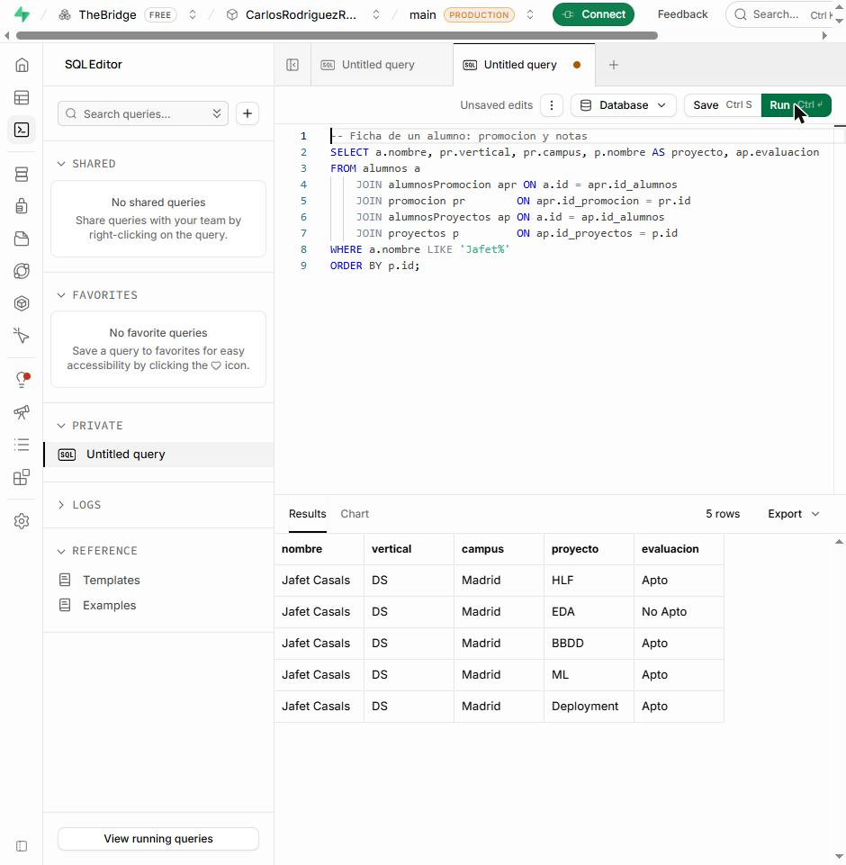

Explicación paso a paso: de unos CSV sin normalizar a una base de datos PostgreSQL alojada en la nube y lista para consultar.
clase_1 … clase_4 y claustroNos dan los datos de los alumnos de varias promociones del bootcamp (y de sus profesores) en ficheros CSV sin normalizar: todo mezclado en una tabla grande, con muchos datos repetidos. Tenemos que convertirlos en una base de datos relacional bien diseñada, que no repita información, que sea capaz de crecer (más campus, verticales, promociones, modalidades…) y que esté alojada en un servidor para poder consultarla desde otras aplicaciones.
| Tarea del enunciado | Qué entregamos |
|---|---|
| 1. Modelo Entidad-Relación (E/R) | Diagrama E/R hecho en draw.io |
| 2. Modelo lógico | Esquema relacional: tablas, columnas, claves primarias y foráneas |
| 3. Normalización | Análisis de la tabla original y comprobación de 1FN, 2FN y 3FN |
| 4. Creación de la base de datos | Scripts SQL (MySQL y PostgreSQL) + base de datos en Supabase + consultas |
| Término | Qué significa (con un ejemplo nuestro) |
|---|---|
| Entidad | Una "cosa" de la que queremos guardar información. Ej.: Alumno, Promoción, Proyecto. Se convierte en una tabla. |
| Atributo | Una característica de una entidad. Ej.: el email de un alumno. Se convierte en una columna. |
| Relación | Cómo se conectan dos entidades. Ej.: un alumno realiza proyectos. |
| Cardinalidad | Cuántos elementos participan en una relación. 1:N = uno con muchos; N:M = muchos con muchos (un alumno hace muchos proyectos y un proyecto lo hacen muchos alumnos). |
| Clave primaria (PK) | Columna (o columnas) que identifica cada fila de forma única. Ej.: alumnos.id. |
| Clave foránea (FK) | Columna que apunta a la PK de otra tabla, y así "enlaza" tablas. Ej.: alumnosProyectos.id_alumnos apunta a alumnos.id. |
| Redundancia | Guardar el mismo dato varias veces. Es lo que queremos eliminar. |
| Normalización | Proceso por pasos (1FN, 2FN, 3FN) para repartir los datos en tablas sin redundancia. |
Tenemos 5 ficheros CSV (separados por ;) en la carpeta data/:
| Fichero | Filas | Promoción | Campus | Proyectos que aparecen como columnas |
|---|---|---|---|---|
clase_1.csv | 15 | Septiembre (18/09/2023) | Madrid | HLF, EDA, BBDD, ML, Deployment (Data Science) |
clase_2.csv | 10 | Febrero (12/02/2024) | Madrid | HLF, EDA, BBDD, ML, Deployment (Data Science) |
clase_3.csv | 14 | Septiembre (18/09/2023) | Madrid | WebDev, FrontEnd, Backend, React, FullSatck (Full Stack) |
clase_4.csv | 13 | Febrero (12/02/2024) | Valencia | WebDev, FrontEnd, Backend, React, FullSatck (Full Stack) |
claustro.csv | 10 | Profesores: nombre, rol (TA / LI), vertical, promoción, campus y modalidad | ||
clase_1.csv)| Nombre | Promoción | Fecha_comienzo | Campus | Proyecto_HLF | Proyecto_EDA | Proyecto_BBDD | Proyecto_ML | Proyecto_Deployment | |
|---|---|---|---|---|---|---|---|---|---|
| Jafet Casals | Jafet_Casals@gmail.com | Septiembre | 18/09/2023 | Madrid | Apto | No Apto | Apto | Apto | Apto |
| Jorge Manzanares | Jorge_Manzanares@gmail.com | Septiembre | 18/09/2023 | Madrid | Apto | No Apto | Apto | Apto | Apto |
| Onofre Adadia | Onofre_Adadia@gmail.com | Septiembre | 18/09/2023 | Madrid | Apto | Apto | Apto | No Apto | Apto |
| … 12 filas más | |||||||||
claustro.csv)| Nombre | Rol | Vertical | Promocion | Campus | Modalidad |
|---|---|---|---|---|---|
| Noa Yáñez | TA | DS | Septiembre | Madrid | Presencial |
| Saturnina Benitez | TA | DS | Septiembre | Madrid | Presencial |
| Mario Prats | LI | FS | Febrero | Valencia | Online |
| … 7 filas más · TA = Teacher Assistant, LI = Lead Instructor | |||||
FullSatck viene así (con la errata) en las cabeceras de los CSV y lo hemos mantenido tal cual.Si metiéramos los CSV tal cual en una sola tabla, tendríamos esto (fíjate en lo que se repite):
| Nombre | Promoción | Fecha_comienzo | Campus | Proyecto_HLF | Proyecto_EDA | … | |
|---|---|---|---|---|---|---|---|
| Jafet Casals | Jafet_Casals@… | Septiembre | 18/09/2023 | Madrid | Apto | No Apto | … |
| Jorge Manzanares | Jorge_Manzanares@… | Septiembre | 18/09/2023 | Madrid | Apto | No Apto | … |
| Onofre Adadia | Onofre_Adadia@… | Septiembre | 18/09/2023 | Madrid | Apto | Apto | … |
| Problema | Ejemplo con nuestros datos |
|---|---|
| Redundancia | "Septiembre · 18/09/2023 · Madrid" se repite en los 15 alumnos de clase_1. |
| Grupos repetidos | Proyecto_HLF, Proyecto_EDA… son el mismo dato (una nota) en 5 columnas. Si mañana hay un proyecto nuevo, hay que cambiar la estructura de la tabla. |
| Anomalía de actualización | Si la promoción cambia su fecha de inicio, hay que cambiarla en 15 filas. Si se olvida una, los datos se contradicen. |
| Anomalía de inserción | No podemos dar de alta la promoción "Valencia FS Septiembre" porque todavía no tiene alumnos. |
| Anomalía de borrado | Si borramos al último alumno de una promoción, perdemos también los datos de esa promoción. |
La normalización resuelve todo esto en tres pasos. Cada forma normal (FN) exige cumplir la anterior.
Regla: cada celda guarda un único valor y no hay grupos de columnas que signifiquen lo mismo.
Qué hacemos: las 5 columnas Proyecto_X se convierten en filas: una fila por cada alumno y proyecto.
Antes (1 fila por alumno, 5 columnas de notas)
| Proyecto_HLF | Proyecto_EDA | … | |
|---|---|---|---|
| Jafet_Casals@… | Apto | No Apto | … |
Después (1 fila por alumno y proyecto)
| Proyecto | Evaluación | |
|---|---|---|
| Jafet_Casals@… | HLF | Apto |
| Jafet_Casals@… | EDA | No Apto |
| Jafet_Casals@… | BBDD | Apto |
Ahora, añadir un proyecto nuevo es añadir filas, no columnas. También convertimos las fechas de texto
(18/09/2023) al formato de fecha estándar (2023-09-18) para guardarlas como DATE.
Regla: si la clave de una tabla está formada por varias columnas, ningún otro dato puede depender solo de una parte de ella.
En la tabla de 1FN, la clave es (alumno, proyecto): hacen falta las dos cosas para saber una evaluación. Pero hay datos que dependen solo de una parte:
alumnos.proyectos.alumnosProyectos.| alumnos | ||
|---|---|---|
| id | nombre | |
| 1 | Jafet Casals | Jafet_Casals@… |
| 2 | Jorge Manzanares | Jorge_Manzanares@… |
| proyectos | |
|---|---|
| id | nombre |
| 1 | HLF |
| 2 | EDA |
| alumnosProyectos | ||
|---|---|---|
| id_alumnos | id_proyectos | evaluacion |
| 1 | 1 | Apto |
| 1 | 2 | No Apto |
Fíjate en que ya no escribimos "Jafet Casals" ni "HLF" muchas veces: usamos su id, que es un número corto.
Regla: un dato no puede depender de otro dato que no sea la clave (dependencia "transitiva").
En la tabla de alumnos todavía tendríamos promoción, fecha de comienzo y campus. Pero:
promocion, y relacionamos cada alumno con su promoción mediante la tabla alumnosPromocion.claustro; a qué promoción dan clase va en promocionClaustro.promocionProyectos.| promocion | ||||
|---|---|---|---|---|
| id | año | fecha_comienzo | campus | vertical |
| 1 | 2023 | 2023-09-18 | Madrid | DS |
| 2 | 2024 | 2024-02-12 | Madrid | DS |
| alumnosPromocion | |
|---|---|
| id_promocion | id_alumnos |
| 1 | 1 |
| 1 | 2 |
Cada tabla "principal" que ha salido de normalizar es una entidad del modelo E/R. Las tablas intermedias son relaciones:
| Entidad | Atributos | De dónde sale |
|---|---|---|
| Alumnos | Id, Nombre, Email | Columnas Nombre y Email de clase_X.csv |
| Promoción | Id, Año promoción, Fecha de comienzo, Campus, Vertical | Columnas Promoción, Fecha_comienzo y Campus; la vertical se deduce de los proyectos |
| Proyectos | Id, Nombre proyecto | Cabeceras Proyecto_X de los CSV |
| Claustro | Id, Nombre, Rol, Modalidad | claustro.csv |
| Relación | Entre | Tipo | Se lee… |
|---|---|---|---|
| Pertenecen | Alumnos – Promoción | N:M | Un alumno pertenece a una o varias promociones; una promoción tiene muchos alumnos. |
| Realizan | Alumnos – Proyectos | N:M | Un alumno realiza muchos proyectos; un proyecto lo realizan muchos alumnos. Tiene el atributo Evaluación. |
| Tienen | Promoción – Proyectos | N:M | Una promoción tiene varios proyectos; un proyecto se da en varias promociones. |
| Tiene | Promoción – Claustro | N:M | Una promoción tiene varios profesores; un profesor puede estar en varias promociones. |

Cómo se lee: rectángulo = entidad · elipse = atributo (subrayado = identificador, futura PK) · rombo = relación · elipse colgando de un rombo = atributo de la relación (Evaluación no es del alumno ni del proyecto, sino de "este alumno en este proyecto") · N:M = tipo de relación.
El modelo lógico traduce el diagrama E/R a tablas, con sus columnas, claves primarias (PK) y claves foráneas (FK). Como vamos a usar PostgreSQL, que es una base de datos relacional, el modelo lógico es el modelo relacional.
| En el E/R hay… | En el modelo relacional se convierte en… |
|---|---|
| Una entidad | Una tabla. Su identificador pasa a ser la PK. |
| Un atributo | Una columna de esa tabla. |
| Una relación 1:N | No crea tabla: la PK del lado "1" se copia como FK en la tabla del lado "N". |
| Una relación N:M | Crea una tabla intermedia con las PK de las dos entidades. Juntas forman su PK, y cada una es FK a su tabla. Los atributos de la relación (como Evaluación) van en esta tabla. |
| Elemento del E/R | Tabla resultante |
|---|---|
| Entidad Alumnos | alumnos |
| Entidad Promoción | promocion |
| Entidad Proyectos | proyectos |
| Entidad Claustro | claustro |
| Relación N:M Pertenecen | alumnosPromocion |
| Relación N:M Realizan (+ Evaluación) | alumnosProyectos (con la columna evaluacion) |
| Relación N:M Tienen | promocionProyectos |
| Relación N:M Tiene | promocionClaustro |
Como todas las relaciones son N:M, tenemos 4 tablas de entidades + 4 tablas intermedias = 8 tablas.
Formato: tabla (columnas). PK clave primaria · FK clave foránea.
| Tabla | Columnas |
|---|---|
promocion | id PK, año, fecha_comienzo, campus, vertical |
alumnos | id PK, nombre, email |
proyectos | id PK, nombre |
claustro | id PK, nombre, rol, modalidad |
alumnosPromocion | id_promocion PK FK → promocion, id_alumnos PK FK → alumnos |
alumnosProyectos | id_alumnos PK FK → alumnos, id_proyectos PK FK → proyectos, evaluacion |
promocionProyectos | id_promocion PK FK → promocion, id_proyectos PK FK → proyectos |
promocionClaustro | id_claustro PK FK → claustro, id_promocion PK FK → promocion |

alumnosProyectos tiene 260 filas: una por cada pareja alumno–proyecto (52 alumnos × 5 proyectos).
La fila (1, 2, 'No Apto') significa: "el alumno 1 (Jafet Casals), en el proyecto 2 (EDA), tiene No Apto".
La PK compuesta (id_alumnos, id_proyectos) impide que un alumno tenga dos notas en el mismo proyecto.
| Columna | Tipo | Motivo |
|---|---|---|
id (todas) | INTEGER autoincremental | La base de datos genera el número sola al insertar. |
fecha_comienzo | DATE | Permite ordenar y filtrar por fechas (no es un texto). |
nombre, campus, rol, evaluacion | VARCHAR(n) | Texto corto con un tamaño máximo. |
email | TEXT | Texto sin límite de longitud. |
modalidad | ENUM('presencial','online') en MySQL · VARCHAR + CHECK en PostgreSQL | Solo admite esos dos valores. |
El enunciado pide analizar los datos y normalizarlos. Ya lo hicimos en el Paso 1 para diseñar el modelo; ahora comprobamos sobre las tablas finales que cumplen las tres formas normales. Si alguna fallara, tendríamos que volver a tocar el E/R.
| Tabla | 1FN valores únicos, sin grupos repetidos | 2FN todo depende de la PK entera | 3FN nada depende de algo que no sea la PK |
|---|---|---|---|
promocion | ✔ | ✔ PK simple | ✔ (ver nota sobre "año") |
alumnos | ✔ | ✔ PK simple | ✔ ya no guarda datos de la promoción |
proyectos | ✔ | ✔ PK simple | ✔ |
claustro | ✔ | ✔ PK simple | ✔ |
alumnosProyectos | ✔ una nota por fila | ✔ la evaluación depende de alumno y proyecto | ✔ |
alumnosPromocion | ✔ | ✔ solo tiene la PK | ✔ |
promocionProyectos | ✔ | ✔ solo tiene la PK | ✔ |
promocionClaustro | ✔ | ✔ solo tiene la PK | ✔ |
alumnos tenía una columna id_promocion (relación 1:N) y además
existía la tabla alumnosPromocion. Así, la promoción de cada alumno estaba guardada en dos sitios, que es justo la
redundancia que queremos evitar. Lo corregimos dejando solo la relación N:M (alumnosPromocion) y quitando la
columna de alumnos.
fecha_comienzo (2023-09-18), así que estrictamente es un dato derivado.
Lo mantenemos porque facilita las consultas por año, pero hay que tener en cuenta que, si se cambia la fecha, también hay que cambiar el año.
Para que la base de datos sea más estricta se podría quitar y calcularlo con EXTRACT(YEAR FROM fecha_comienzo).
claustro.csv trae la modalidad (Presencial / Online), así que de momento la guardamos únicamente para el profesorado.
En una promoción conviven profesores presenciales (los TA) y online (los LI), por eso no la pusimos en promocion.
DATE y modalidad restringida a valores válidos.Primero la creamos en MySQL Workbench (en local) para probar el diseño. Después la pasamos a PostgreSQL, que es lo que pide el enunciado, y la alojamos en Supabase, un servicio gratuito de PostgreSQL en la nube (el enunciado sugiere Render; los dos sirven porque los dos son PostgreSQL).
El orden importa: primero se crean las tablas sin FK (promoción, alumnos, proyectos, claustro) y después las intermedias, porque una FK solo puede apuntar a una tabla que ya existe. Extracto del script MySQL:
CREATE TABLE promocion ( id INTEGER PRIMARY KEY AUTO_INCREMENT, año INTEGER, fecha_comienzo DATE, campus VARCHAR(20), vertical VARCHAR(5) ); CREATE TABLE alumnos ( id INTEGER PRIMARY KEY AUTO_INCREMENT, nombre VARCHAR(20), email TEXT ); -- Tabla intermedia N:M con atributo propio (evaluacion) CREATE TABLE alumnosProyectos ( id_alumnos INTEGER, id_proyectos INTEGER, evaluacion VARCHAR(20), PRIMARY KEY (id_alumnos, id_proyectos), FOREIGN KEY (id_alumnos) REFERENCES alumnos(id), FOREIGN KEY (id_proyectos) REFERENCES proyectos(id) ); CREATE TABLE claustro ( id INTEGER PRIMARY KEY AUTO_INCREMENT, nombre VARCHAR(30), rol VARCHAR(20), modalidad ENUM("presencial","online") ); -- ... y así el resto de tablas intermedias (alumnosPromocion, promocionProyectos, promocionClaustro)
Los INSERT se generan a partir de los 5 CSV, aplicando la normalización del Paso 1:
Proyecto_X (10).alumnosPromocion (52).alumnosProyectos (52 × 5 = 260).promocionProyectos (4 promociones × 5 = 20).promocionClaustro (10).INSERT INTO promocion (id, año, fecha_comienzo, campus, vertical) VALUES (1, 2023, '2023-09-18', 'Madrid', 'DS'), (2, 2024, '2024-02-12', 'Madrid', 'DS'), ... INSERT INTO alumnosProyectos (id_alumnos, id_proyectos, evaluacion) VALUES (1, 1, 'Apto'), -- Jafet Casals · HLF (1, 2, 'No Apto'), -- Jafet Casals · EDA ...
MySQL y PostgreSQL usan casi el mismo SQL, pero hay diferencias que hacen fallar el script si no se adaptan:
| En MySQL | En PostgreSQL | Por qué |
|---|---|---|
DROP/CREATE DATABASE, USE, SET NAMES | Se quitan | Supabase ya nos da una base de datos (postgres) en UTF-8. |
AUTO_INCREMENT | GENERATED BY DEFAULT AS IDENTITY | Es la forma estándar de PostgreSQL de numerar automáticamente. |
ENUM("presencial","online") | VARCHAR(20) CHECK (modalidad IN ('presencial','online')) | PostgreSQL no admite ENUM dentro del CREATE TABLE, y las comillas dobles significan "nombre de columna", no texto. |
Comillas invertidas `id` | Sin comillas | PostgreSQL no las entiende. |
SHOW TABLES | Se quita | No existe en PostgreSQL (las tablas se ven en el Table Editor). |
| — | DROP TABLE IF EXISTS … CASCADE al principio | Para poder ejecutar el script varias veces sin errores. |
| — | BEGIN; … COMMIT; | Si algo falla, no se queda nada a medias. |
| — | SELECT setval(...) al final | Como insertamos los id a mano, hay que avisar al contador de que siga por el 53 (y no por el 1). |
Un detalle: PostgreSQL guarda los nombres sin comillas en minúsculas, así que alumnosProyectos aparece como
alumnosproyectos. Las consultas funcionan igual escribiéndolo de cualquiera de las dos formas.
ProyectoGrupal_PostgreSQL.sql y pulsar Run.Resultado en Supabase: el Schema Visualizer (menú Database) dibuja automáticamente las 8 tablas y sus relaciones a partir de las claves foráneas. Es el mismo modelo relacional de la Figura 2.

El mismo esquema, obtenido con la ingeniería inversa de MySQL Workbench (Database → Reverse Engineer), se ve mucho mejor que en Supabase: muestra el tipo de cada columna, marca las claves primarias y foráneas con iconos, y dibuja las relaciones con la notación "pata de gallo" (una raya = 1, tres patas = N), así que se ve de un vistazo qué lado de cada relación es el "1" y cuál el "N".

En el Table Editor se pueden ver y editar los datos de cada tabla. Por ejemplo, claustro con la modalidad de cada docente:

SELECT 'promocion' AS tabla, COUNT(*) AS filas FROM promocion UNION ALL SELECT 'alumnos', COUNT(*) FROM alumnos -- ... una línea por tabla

Estas consultas son las que enseñaremos en la presentación para demostrar que la base de datos funciona.
Todas usan JOIN para volver a juntar la información que la normalización repartió en varias tablas.
SELECT pr.id, pr.vertical, pr.campus, pr.fecha_comienzo, COUNT(apr.id_alumnos) AS num_alumnos FROM promocion pr LEFT JOIN alumnosPromocion apr ON pr.id = apr.id_promocion GROUP BY pr.id, pr.vertical, pr.campus, pr.fecha_comienzo ORDER BY pr.id;
| id | vertical | campus | fecha_comienzo | num_alumnos |
|---|---|---|---|---|
| 1 | DS | Madrid | 2023-09-18 | 15 |
| 2 | DS | Madrid | 2024-02-12 | 10 |
| 3 | FS | Madrid | 2023-09-18 | 14 |
| 4 | FS | Valencia | 2024-02-12 | 13 |
| 5 | FS | Valencia | 2023-09-18 | 0 |
| 6 | FS | Madrid | 2024-02-12 | 0 |
6 filas
Usamos LEFT JOIN para que también salgan las promociones 5 y 6, que tienen profesores pero aún no tienen alumnos.
Esto es justo lo que la tabla original no permitía (anomalía de inserción).
SELECT p.nombre AS proyecto, COUNT(*) AS evaluados, SUM(CASE WHEN ap.evaluacion = 'Apto' THEN 1 ELSE 0 END) AS aptos, ROUND(100.0 * SUM(CASE WHEN ap.evaluacion = 'Apto' THEN 1 ELSE 0 END) / COUNT(*), 1) AS porcentaje_aptos FROM alumnosProyectos ap JOIN proyectos p ON ap.id_proyectos = p.id GROUP BY p.id, p.nombre ORDER BY porcentaje_aptos DESC;
EDA es el proyecto con más suspensos (56 % de aptos); ML y Deployment, los que más aprueban (88 %).

SELECT a.nombre, pr.vertical, pr.campus, p.nombre AS proyecto, ap.evaluacion FROM alumnos a JOIN alumnosPromocion apr ON a.id = apr.id_alumnos JOIN promocion pr ON apr.id_promocion = pr.id JOIN alumnosProyectos ap ON a.id = ap.id_alumnos JOIN proyectos p ON ap.id_proyectos = p.id WHERE a.nombre LIKE 'Jafet%' ORDER BY p.id;
Con 4 JOIN reconstruimos la fila original del CSV, pero ahora a partir de datos sin redundancia.

SELECT pr.id AS promocion, pr.vertical, pr.campus, pr.fecha_comienzo, c.nombre AS docente, c.rol, c.modalidad FROM promocion pr JOIN promocionClaustro pc ON pr.id = pc.id_promocion JOIN claustro c ON pc.id_claustro = c.id ORDER BY pr.id, c.rol DESC, c.nombre;
| promocion | vertical | campus | fecha_comienzo | docente | rol | modalidad |
|---|---|---|---|---|---|---|
| 1 | DS | Madrid | 2023-09-18 | Ariel Lledó | TA | presencial |
| 1 | DS | Madrid | 2023-09-18 | Noa Yáñez | TA | presencial |
| 1 | DS | Madrid | 2023-09-18 | Saturnina Benitez | TA | presencial |
| 1 | DS | Madrid | 2023-09-18 | María Dolores Diaz | LI | online |
| 3 | FS | Madrid | 2023-09-18 | Anna Feliu | TA | presencial |
| 3 | FS | Madrid | 2023-09-18 | Luis Ángel Suárez | LI | online |
| 4 | FS | Valencia | 2024-02-12 | Ana Sofía Ferrer | TA | presencial |
| 4 | FS | Valencia | 2024-02-12 | Mario Prats | LI | online |
| 5 | FS | Valencia | 2023-09-18 | Rosalva Ayuso | TA | presencial |
| 6 | FS | Madrid | 2024-02-12 | Angélica Corral | TA | presencial |
10 filas
SELECT a.nombre, pr.vertical, pr.campus FROM alumnos a JOIN alumnosPromocion apr ON a.id = apr.id_alumnos JOIN promocion pr ON apr.id_promocion = pr.id JOIN alumnosProyectos ap ON a.id = ap.id_alumnos GROUP BY a.id, a.nombre, pr.vertical, pr.campus HAVING SUM(CASE WHEN ap.evaluacion = 'No Apto' THEN 1 ELSE 0 END) = 0 ORDER BY a.nombre;
| nombre | vertical | campus |
|---|---|---|
| Anita Heredia | DS | Madrid |
| Daniela Falcó | DS | Madrid |
| Eli Casas | DS | Madrid |
| Ernesto Uriarte | FS | Valencia |
| Haydée Figueroa | DS | Madrid |
| Herberto Figueras | FS | Madrid |
| Leoncio Tena | DS | Madrid |
| Loida Arellano | FS | Madrid |
| Ricarda Tovar | FS | Valencia |
| Rosalina Llanos | DS | Madrid |
| Teresa Laguna | FS | Valencia |
11 filas
HAVING filtra después de agrupar: nos quedamos con los alumnos que tienen 0 "No Apto". Son 11 de 52.
SELECT pr.campus, pr.vertical, COUNT(DISTINCT apr.id_alumnos) AS alumnos, COUNT(DISTINCT pc.id_claustro) AS docentes FROM promocion pr LEFT JOIN alumnosPromocion apr ON pr.id = apr.id_promocion LEFT JOIN promocionClaustro pc ON pr.id = pc.id_promocion GROUP BY pr.campus, pr.vertical ORDER BY pr.campus, pr.vertical;
| campus | vertical | alumnos | docentes |
|---|---|---|---|
| Madrid | DS | 25 | 4 |
| Madrid | FS | 14 | 3 |
| Valencia | FS | 13 | 3 |
3 filas
COUNT(DISTINCT …) evita contar dos veces a la misma persona al unir dos tablas a la vez.
El enunciado pide que la base de datos pueda crecer en campus, verticales, promociones, modalidades, etc. Gracias a la normalización, casi todo se hace añadiendo filas, sin cambiar la estructura:
INSERT INTO promocion (año, fecha_comienzo, campus, vertical) VALUES (2025, '2025-09-15', 'Barcelona', 'DS'); -- el id se genera solo
INSERT INTO proyectos (nombre) VALUES ('Redes'), ('Pentesting'); INSERT INTO promocion (año, fecha_comienzo, campus, vertical) VALUES (2025, '2025-10-01', 'Madrid', 'CS'); -- y se enlazan en promocionProyectos
-- Jafet (id 1) se apunta también a la promoción Full Stack de Madrid (id 3) INSERT INTO alumnosPromocion (id_promocion, id_alumnos) VALUES (3, 1);
Esto es posible porque Alumnos–Promoción es N:M. Con el diseño 1:N no se podría sin duplicar al alumno.
| Quiero añadir… | ¿Cambia la estructura? | Cómo |
|---|---|---|
| Un campus | No | Nueva fila en promocion |
| Una promoción | No | Nueva fila en promocion |
| Un proyecto | No | Nueva fila en proyectos + promocionProyectos |
| Una vertical | No | Nuevo valor en promocion.vertical |
| Un profesor | No | Nueva fila en claustro + promocionClaustro |
| Una modalidad nueva (p. ej. "híbrida") | Sí | Hay que modificar el ENUM / CHECK (ver mejoras) |
| Aulas | Sí | Nueva tabla aula relacionada con promoción (ver mejoras) |
FullSatck) para no alterar los datos de origen.| Mejora | Qué aporta |
|---|---|
Tabla modalidad (id, tipo) | Añadir "Híbrida" o "Telemática" sería un simple INSERT, sin tocar la estructura. Se podría usar también para alumnos y promociones. |
Tablas campus y vertical | Evitan errores de escritura ("Madrid" vs "madrid") y permiten guardar más datos de cada campus (dirección, ciudad…). |
Tabla aula | El enunciado menciona las aulas como posible crecimiento. |
Quitar año de promoción | Es derivable de fecha_comienzo; quitarlo elimina la última redundancia. |
UNIQUE en alumnos.email y NOT NULL en columnas obligatorias | Más integridad: no puede haber dos alumnos con el mismo email ni alumnos sin nombre. |
CHECK (evaluacion IN ('Apto','No Apto')) | Impide valores de evaluación inválidos. |
Corregir FullSatck → FullStack | Limpieza de datos de origen. |
Partimos de 5 CSV con datos repetidos y columnas que significaban lo mismo, y llegamos a una base de datos de 8 tablas en 3FN, con claves primarias y foráneas que garantizan la integridad, 420 filas cargadas, alojada en PostgreSQL (Supabase) y preparada para crecer en campus, promociones, proyectos y profesorado sin cambiar su estructura.
| Fichero | Contenido |
|---|---|
data/clase_1.csv … clase_4.csv, data/claustro.csv | Datos de partida |
| Diagrama E/R (draw.io) | Modelo Entidad-Relación (Figura 1) |
docs/img/supabase_*.jpg | Capturas de la base de datos en Supabase (Figuras 3 a 8) |
ProyectoGrupalScriptCreacion.sql | Script de creación de tablas para MySQL Workbench |
ProyectoGrupal_Inserts.sql | INSERT de todos los datos (válidos en MySQL y PostgreSQL) |
ProyectoGrupal_PostgreSQL.sql | Script completo para Supabase / Render: tablas + datos + comprobación |
Proyecto_BBDD.md | Enunciado del proyecto |